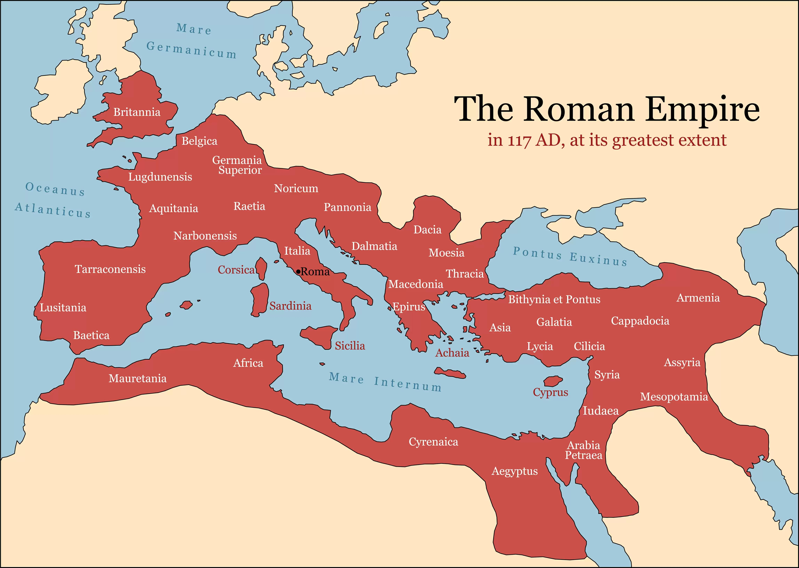
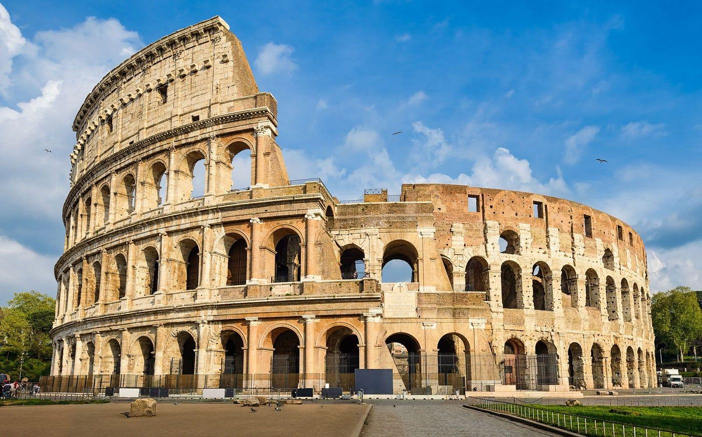
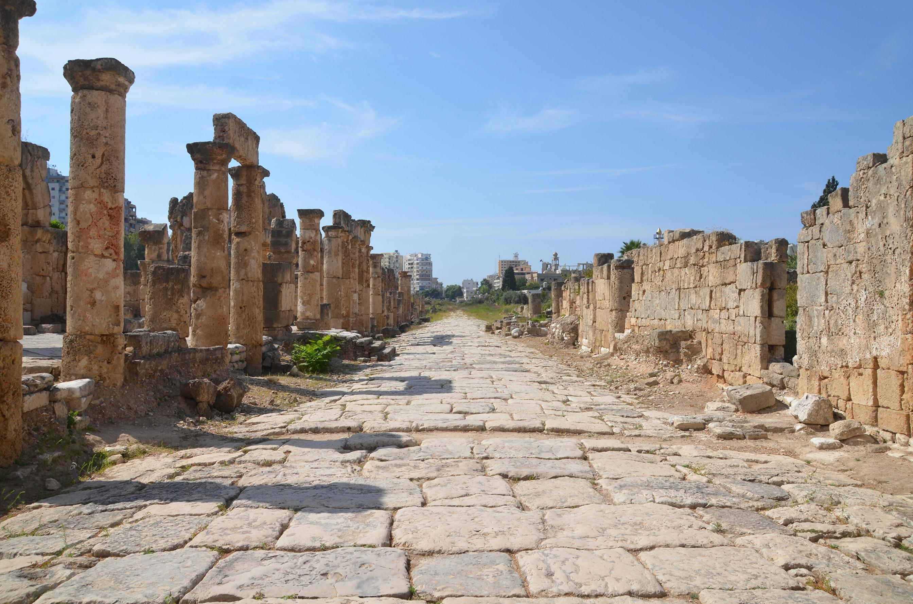

Origen
Roma fue fundada tradicionalmente en el año 753 a. C., según la leyenda de Rómulo y Remo.
Antes de convertirse en imperio, Roma pasó por dos etapas
Monarquía: gobernada por reyesRepública: gobernada por magistrados y el Senado
En el año 27 a. C., Octavio Augusto se convirtió en el primer emperador romano, dando inicio al Imperio romano.

El Imperio romano alcanzó su máxima extensión territorial durante el gobierno del emperador Trajano, alrededor del año 117 d. C.
Dominó territorios que actualmente pertenecen a:
- Italia, España y Francia.
- Gran parte de Europa.
- Grecia y Turquía.
- Egipto y el norte de África.
- Parte de Oriente Medio.
Su ejército, conocido por sus legiones, fue fundamental para conquistar y defender estos territorios.
Organización y sociedad
La sociedad romana estaba dividida principalmente en:
Emperador: máxima autoridad política y militar.
Patricios: familias ricas y poderosas.
Plebeyos: ciudadanos comunes, comerciantes y trabajadores.
Esclavos: personas sin libertad que realizaban diversos trabajos.

Los romanos dejaron grandes aportes a la humanidad:
Derecho romano: influyó en los sistemas legales actuales.
Arquitectura: construyeron coliseos, templos, puentes y acueductos.
Ingeniería: desarrollaron caminos y sistemas de agua.
Idioma: el latín dio origen a lenguas como el español, francés, italiano y portugués.
Religión: el cristianismo se expandió por el Imperio y terminó convirtiéndose en su religión oficial.
